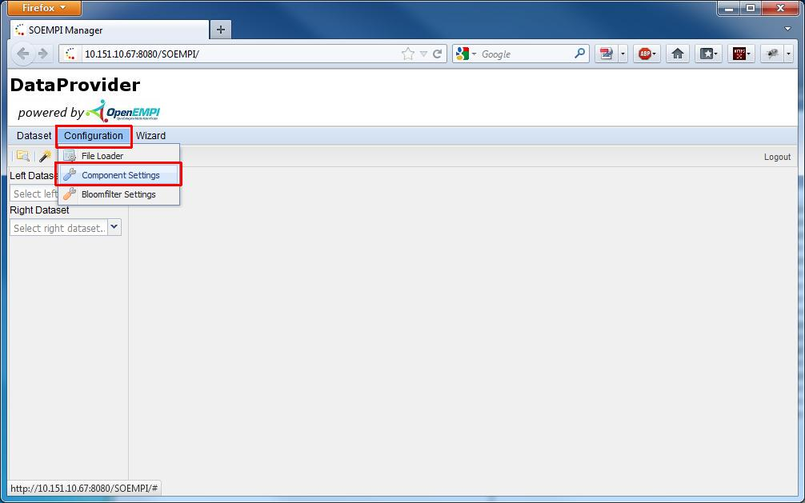
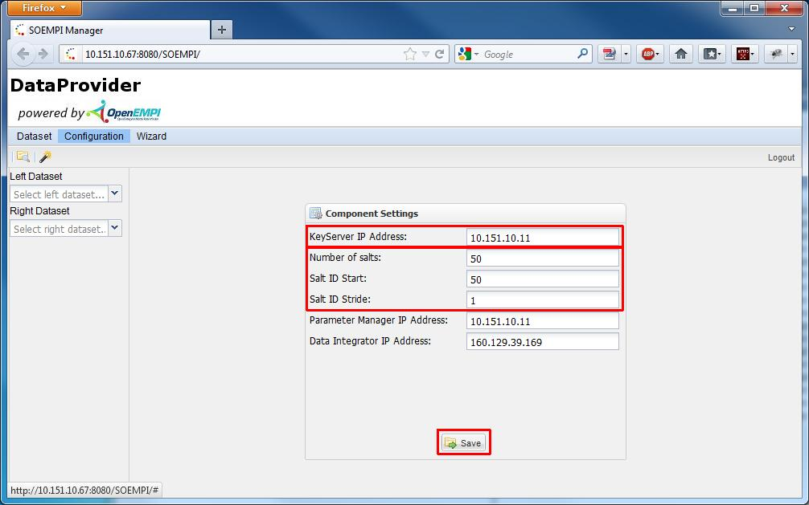
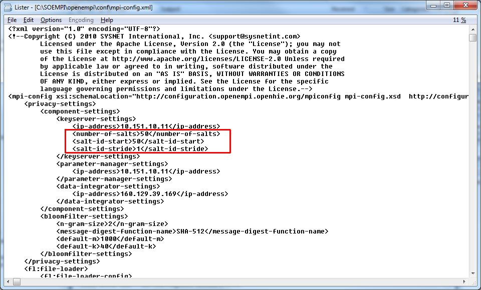

Configure Key Server settings
SOEMPI has a section in it's configuration which specifies keys server related settings.
There are properties associated with obtaining and cacheing salts, besides that there's the IP address
of the Key Server too:
- ip-address: Key Server's IP address
- number-of-salts: how many salt entities will be obtained and cached once SOEMPI connects to the Key Server
- salt-id-start: What is the id of the forst salt element
- salt-id-stride: The salt id is incremented by this value in Key Server's database
Ways to change Key Server settings.
- On the UI: Specific configuration settings.


- In the configuration file (mpi-config.xml): at the beginning there's a keyserver-settings section
(within the mpi-config/privacy-settings/component-settings tags). Edit these manually if you want. JBoss needs to be
restarted in this case.
